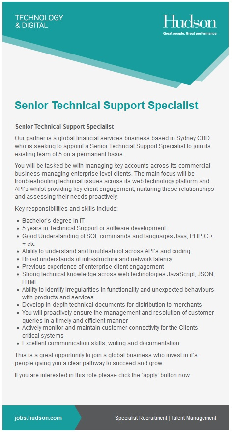
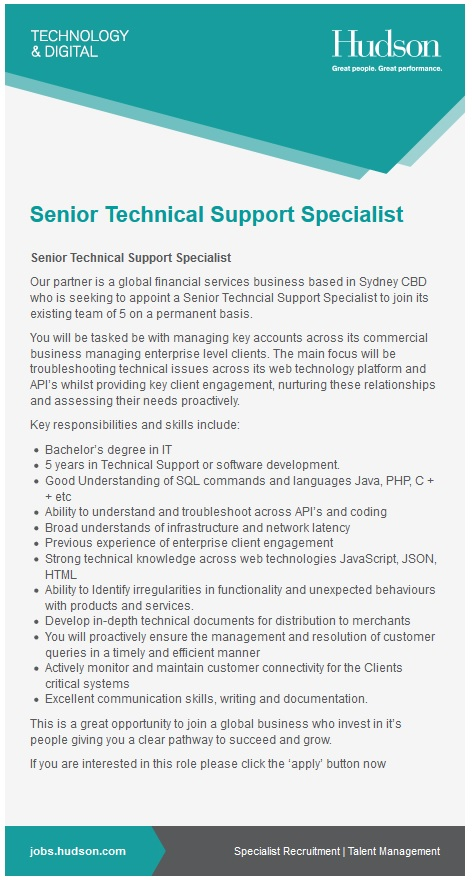
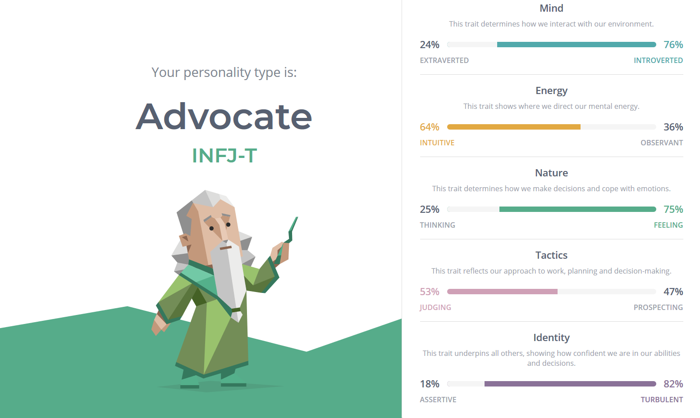
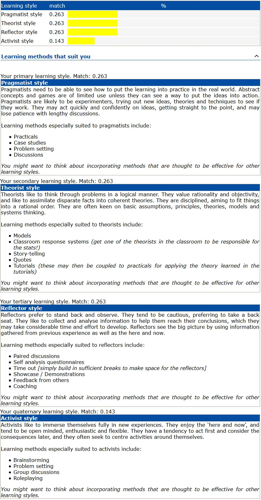

My name is Jessica, I am 28 years old and I currently do IT support for a government agency. I began my career as a plumber when I was 16, which after a couple of years I realized is not my ideal career path. I completed various IT courses over the span of 4 years and was able to secure employment in a helpdesk role. From there I have been able to perform various roles within the same organization.
Personal Information
Interest in IT
My father sparked my interest in IT from a young age as he would sit me on his lap when I was six years old and he would work on his Macintosh II computer, futilely explaining the various features to me. I inherited his passion for technology from a young age, completing computer science subjects in high school in both senior years. Since my adolescence I have started my career in IT, doing IT support for NSW health in various roles over the span of 6 years.
I chose to come to RMIT to further my knowledge in Information Technology and help develop my career. While I have a lot of technical experience I would like to expand on that knowledge, helping me better understand the relation IT can have to businesses.
During my time at RMIT I hope to gain exposure to a variety of systems and technologies, gaining skills in programming languages and the managing of IT systems. In addition to the aforementioned skills I hope to understand how I can properly incorporate those skills into my current role, and to further my career. I also hope to learn how I can work more effectively in a team of IT professionals.
Ideal Job
My ideal job would be something that provides a variety of challenges, and requires a varied skillset. I have chosen a Senior Technical Support Specialist supporting various clients with their web based platforms. While my ideal job does not need to support web based applications, the role does provide me with the aforementioned varied skillset. The position advertises strong client engagement across various clients, which will provide me with experience in supporting IT systems for different industries.
The role requires an understanding of Java, PHP, C++ and other programming/scripting languages. HTML, JavaScript and other technologies are also used and require proficiency. A holistic understanding of systems is also required, with the ability to develop technical documents for merchants/clients. In addition a Bachelor’s degree and advanced troubleshooting skills are required.
Job link


Currently I have a diploma of Information Technology, and 5 years of technical experience supporting various systems. I am familiar with several scripting and programming languages, including PHP, HTML and Java and have the desire to gain exposure to more languages in the future through online courses and hands on experience. I have been able to strengthen my analytical skills and using this to further my ability to troubleshoot.
As I advance through this degree I hope to gain some of the experience required for this role. I can gain a lot of experience in the required skills by taking online courses and practicing in a virtualized environment. My current role provides me with the opportunity to work with other teams on projects, which I hope will allow for me to advance my current skills to that of what is required in this role. As this role supports a variety of systems, there is no singular plan to gain these skills, as it requires a collection of skills. The role also requires a Bachelor’s degree which is a factor in me completing this degree.
Personal Profile
I have chosen to take the Myers-Briggs test to find out my personality type, with the results being displayed below. My results show that I am INFJ-T, meaning I am introverted and can become exhausted by social interactions often choosing to “recharge my social battery”. I find this statement to be especially true after longer periods of socializing. The results show that I am mostly intuitive, resulting in being open minded and creative in finding results. When I took the online learning style test that emtrain provides I was very surprised to find that I am quite balanced between the pragmatist, theorist, and reflector learning styles. I feel this is quite accurate as I find myself to be adaptive when taking on new skills.

My results are fairly balanced in most aspects, which has helped me work in team environments and adapt when beneficial. When working with a team I will always listen before speaking, often asking questions to properly understand the views of the team as a whole. I feel this matches the reflector learning style, using observation and analysis for certain situations.

In the past I have chosen a mix team members based on how they interact with others and the skills they have. I find that when you have a mix of people that are able to approach a problem from different angles, results are often apparent much earlier, or with greater success. I feel that with my results I will be able to work best with open minded people that are able to think creatively and share ideas openly.
Project
Overview
I have an idea for a project involving a media sharing platform that allows content creators and performers to share their work. The purpose is to give smaller artists a platform to distribute their content to their fan base and to extend their fan base to other users who share similar interests. Artists with a larger fanbase will be able to benefit from this platform as it gives them an opportunity to reach out to potentially untapped markets. The platform will allow creators to charge for their work or provide the content free of charge. There will also be a presence of user collaboration, providing features such as multi-user video streaming/recording and a streamlined way of distributing funds the content has accrued. The application is going to be developed with anti-bullying in mind and provide a safe and constructive environment for users to share their work.
Motivation
As an amateur creator myself I find that the online media sharing platforms available at the moment are lacking in integrating more popular artists with upcoming artists. While content-sharing sites have been done in the past, the focus has not been on artists but rather on a particular media (i.e. streaming sites such as Twitch or SoundCloud). The platform I am proposing focuses on balancing the creator and customer (or viewer) experience. Giving all artists a catered platform to share their content will allow users to access the content and stay up to date with new updates and releases.
Description
The application will be free for download and will allow users to create an account to view other users shared content. Similar to other content-sharing sites (Youtube, twitch, etc.) every user will have a page they can upload to, or simply decorate as a space to host any information that they wish to share. Privacy and security will be an important factor in application development as the goal is to have a safe environment for users to communicate, share, and collaborate.
There will be various options to choose what a user can and can't see, giving the user control of what content is shared with them. The user can subscribe to other users' pages to have their content shared directly to them, while also having features that control what content is suggested to them with opt-in/opt-out options. A live chat feature will also be present, providing users a way to communicate via an IM service.
Users who wish to charge for their work can set prices for the content they provide, providing content for free if they wish to do so. Distributing accrued funds will be simplified for the user allowing the funds to be automatically directed to other users' account(s) or external PayPal account(s). Creators will be able to set free trials to allow users to view a certain amount of the content, or the content a certain amount of times.
Users will be able to stream via the proposed platform and save the streams for users to download after the stream has finished. Streaming has the option for multiple users to collaborate and broadcast to a singular stream, giving artists a way of performing live to their fanbase. Technical limitations will limit the number of users able to broadcast to a single stream, however, the goal is to have a limit of 5 concurrent broadcasts per stream. In addition to the multi-user broadcasting, there will be the option for an additional user to edit aspects of the live stream, including volume levels for each member, camera control, video effects/filters, etc.
There is going to be audio streaming in addition to video, giving users the ability to upload their songs, albums, podcasts, etc. The interface for audio streaming is planned to be simple to use with the ability to play audio while the application is not open.
Beyond streaming audio and video, there will be pages for authors and writers to share their work. Writers will have the option to upload the content as a written story, audiobook, video reading, or graphic novel. There will be tools included to allow the user to format their stories to include different stylings and the inclusion of images. Viewers of this content will have the ability to bookmark an exact spot to return to in the future.
Users will be able to share appreciation and feedback to other users for their work with comments enabled, however no "like" system is planned to be implemented. Users will be able to favourite content whereas only the user posting the content can see who has favorited the content
Tools and Technologies
As this project will involve various sources of media and be hosted on different devices, there will be several different technologies used and tools required. The video streaming will run on RTMP and use a transcoding system to distribute the media, and Video On Demand (VOD) will be hosted on internal servers to meet privacy requirements. The platform will be delivered as a website and an application for mobile devices. The platform will need to be compatible with iOS and Android OS systems, with the website using technology that is compatible with popular web browsers such as Chrome and Firefox.
Skills Required
The application is going to be marketed towards mobile users which would mean the application would need to be available on the Android and Apple platforms initially, with the potential to expand into windows and blackberry OS. The main programming language will be Python as it is supported on both platforms and provides the versatility needed to program the different features of this application. The website version will need to be compatible with various browsers and will be written in HTML, CSS, and JavaScript. Both the website and mobile application will communicate with the server using SQL.
Outcome
Overall my goal is to create an open and safe environment that promotes creativity and collaboration, while also providing customer satisfaction with a constant intake of user feedback, intuitive UI, and balanced algorithms. I would consider this a success when the user base reaches 2000 users with at least 20% of those being creators.